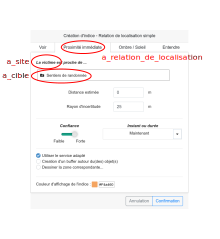
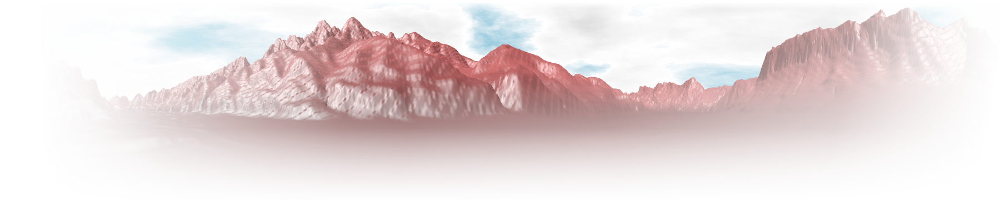

class: center, first-slide name: intro <h1>L‚ÄôOntologie d‚ÄôAlerte Choucas : <br>de la mod√©lisation des connaissances √† un outil support d‚Äôun raisonnement g√©ovisuel</h1> <h3>Application √† la recherche de victime en haute-montagne</h3> <br> <hr style="width: 40%;"> <h4 style="margin-top: 3px;">SAGEO 2019 - Clermont-Ferrand - 14/11/2019</h4> <h3> Matthieu V<span class="petite-maj">iry</span><sup>1,2</sup> & Marl√®ne V<span class="petite-maj">illanova-</span>O<span class="petite-maj">liver</span><sup>1</sup></h3> <p style="font-size: 0.7em;"> <span>1. <b>LIG</b>, Univ. Grenoble Alpes, CNRS, Grenoble INP</span><br> <span>2. <b>PACTE</b>, Univ. Grenoble Alpes, CNRS, Sciences Po Grenoble</span> </p> <img src="img/label-ANR.png" class="anr-img" /> <span class="anr-text"><i>ANR-16-CE23-0018</i></span> <p style="margin: auto;"><img src="img/logo-choucas.png" class="choucas-logo" /></p> <p style="margin:auto;padding:0;"></p> --- name: plan-annonce <h3>Plan</h3> <br><br> 1. Contexte de recherche 2. Mod√©lisation de l'*alerte* 3. Mat√©rialisation dans un prototype d'interface 4. Bilan, perspectives, discussion ??? Attaquons tout de suite avec le plan de ma pr√©sentation ! - Je vais d'abords vous parlez rapidement du contexte dans le quel se d√©roule mes recherches - les habitu√©s de SAGEO ont d'ailleurs d√©j√† du entendre parler de l'ANR CHOUCAS lors des deux pr√©c√©dentes √©ditions. - Puis nous rentrerons dans le vif du sujet avec l'Ontologie d'Alerte Choucas - enfin je pr√©senterai quelques propositions de mat√©rialisation des concepts formalis√©s pr√©c√©demment dans un prototype d'interface ; - la derni√®re partie pr√©sentera les suites √† donner √† au travail pr√©sent√© aujourd'hui -- <p style="margin: auto; position: absolute; right: 150px; top: 375px;"></p> -- <p style="margin: auto; position: absolute; right: 150px; top: 375px;"></p> -- <p style="margin: auto; position: absolute; right: 150px; top: 375px;"></p> -- <p style="margin: auto;"></p> --- name: plan1 <!-- <h3>Plan</h3> --> <br><br><br><br><br> 1. <span class="subtitle-here">Contexte de recherche</span> 2. Mod√©lisation de l'*alerte* 3. Mat√©rialisation dans un prototype d'interface 4. Bilan, perspectives, discussion ??? D'abords le contexte de recherche donc ! --- class: l-p-margin name: context2 <h3>Contexte de recherche (1)</h3> ‚û°Ô∏è __ANR CHOUCAS__ : *Int√©gration de donn√©es h√©t√©rog√®nes et raisonnement spatial pour l'aide √† la localisation des victimes en montagne* (Olteanu-Raimond *et al.*, 2017) <br> ‚û°Ô∏è Participation du **PGHM** (*Peloton de Gendarmerie de Haute-Montagne*) de Grenoble ??? - Mes travaux se d√©roulent dans le cadre de l'ANR CHOUCAS, qui visent √† am√©liorer la localisation des victimes en zone de montagne. - Une des originalit√© du projet tiens dans la participation du PGHM via un secouriste r√©f√©rent √† Grenoble. Cela nous permet d'avoir une d√©marche centr√©e utilisateur, focalis√©e sur les besoins utilisateur. -- <br> ‚û°Ô∏è Description de la localisation de la victime en langage naturel (environnement imm√©diat, itin√©raire suivi, etc.) lorsque localisation GPS n'est pas possible</p> ??? Lorsqu'on parle "localisation de victime en montagne" on parle du cas ou une personne (parfois la victime) demande l'intervention des secours mais ne connait pas sa localisation pr√©cise. La localisation est ainsi d√©crite en r√©f√©rence √† l'environnement imm√©diat et √† l'itin√©raire parcouru : "je suis sur un sentier de randonn√©e", "je vois un lac", "je suis parti il y a plusieurs heures", etc. Le caract√®re imparfait de ces descriptions est parfois amplifi√© par une faible connaissance de la montagne, de la peur ou du stress (nuit qui tombe, batterie de t√©l√©phone qui diminue, etc.) voir d'√©ventuelles blessures. -- Les secouristes doivent interpr√™ter ces indices (parfois en consultant des sources de donn√©es vari√©es : cartes topographique, guides papiers, etc.) <div style="text-align: center;position: absolute;bottom: 0px;right: 180px;"> </div> ??? Les secouristes qui traitent cet appel doivent trouver la position de la victime en croisant ces diff√©rentes informations ; pour cel√† ils utilisent une interface affichant carte topographique ou orthophotos ainsi que quelques couches m√©tiers ; ils consultent parfois d'autres sources d'informations : guides papiers ou sites communautaires. --- name: context3 <h3>Contexte de recherche (2)</h3> <br> <u>Demande soci√©tale</u> : Am√©lioration de la capacit√© de r√©ponse √† une alerte pour optimiser les moyens engag√©s -- <br><br><br> <u>Mon objectif</u> : **Proposer des m√©thodes permettant d'accompagner le raisonnement du secouriste lors d'une alerte** <br> <div class="small"> <u>Plus pr√©cis√©ment</u> : <ul> <li><strong><i>Identifier les concepts du raisonnement humain, mobilis√©s lors d‚Äôune recherche de localisation, √† mod√©liser pour accompagner cette t√¢che</i></strong></li> <br> <li>Proposer des techniques d‚Äôacquisition et de traitement des donn√©es pour faciliter cette t√¢che</li> <br> <li>Proposer des techniques de restitution g√©ovisuelle permettant de donner √† voir des informations en vue d'une prise de d√©cision</li> </ul> </div> ??? Dans le cadre du projet CHOUCAS on est donc face √† une demande soci√©tale importante ; en effet ces travaux visent √† am√©liorer la capacit√© de r√©ponse √† une alerte pour optimiser les moyens engag√©s et sauver des vies. J'effectue ces recherches dans le cadre ma th√®se en informatique et j'ai pour principal objectif de "Proposer des m√©thodes permettant d'accompagner le raisonnement du secouriste lors d'une alerte" Pour cel√† je dois passer pas plusieurs √©tapes; qui sont en quelques sortes mes sous objectifs actuels. Les travaux que je vais vous pr√©senter aujourd'hui s'inscrivent essentiellement dans le cadre du 1er objectif ; √ßa m'offre aussi un cadre pour travailler et tester les propositions de mes deux objectifs suivants. * identifier les concepts du raisonnement humains, mobilis√©s lors d'une recherche de localisation, √† mod√©liser pour accompagner cette t√¢che, * proposer des techniques d‚Äôacquisition et de traitement des donn√©es (d‚Äôexploitation des connaissances de nature imparfaites) pour faciliter cette t√¢che * proposer des techniques de restitution g√©o-visuelle permettent de donner √† voir de l‚Äôinformation en vue d'une prise de d√©cision --- name: plan2 <!-- <h3>Plan</h3> --> <br><br><br><br><br> 1. Contexte de recherche 2. <span class="subtitle-here">Mod√©lisation de l'*alerte*</span> 3. Mat√©rialisation dans un prototype d'interface 4. Bilan, perspectives, discussion <br><br><br> <div style="margin: 30px; text-align: center;"> <h3>‚û§ Quels concepts du raisonnement humain, mobilis√©s lors d‚Äôune recherche de localisation, sont √† mod√©liser pour accompagner cette t√¢che ?</h3> </div> ??? Venons-en maintenant au faits et √† la formalisation des concepts li√© √† une *alerte*. --- name: ontology-intro2 ### L'Ontologie d'Alerte Choucas (OAC) - √âtat de l'art et positionnement <br> ‚û°Ô∏è Pr√©-requis √† une visualisation intelligente : **formalisation de la connaissance du domaine**, **choix de techniques et m√©thodes adapt√©es aux t√¢ches sp√©cifiques devant √™tre r√©alis√©es**, etc. (Adrienko & Adrienko, 2007) <br> ‚û°Ô∏è Pour l'organisation et gestion des op√©rations de secours, caract√®re int√©ressant : * de **visualisation 3D** ainsi que de la **possibilit√© de d√©coder des requ√™tes effectu√©es en langague naturel** (L√∂ffler *et al.*, 2007) * des **approches √† base d'ontologies** + **besoin de supporter efficacement le raisonnement spatio-temporel des secouristes** (Konstantopoulos *et al.*, 2006) <br> ‚û°Ô∏è Approche comparable √† (Abi-Zeid *et al.*, 2010) qui va **de la mod√©lisation des connaissances √† sa mise √† disposition dans un prototype d'interface de recherche interactive**. ??? Des travaux ont d√©j√† √©t√© r√©alis√©e concernant l'organisation des secours et l'aide √† la d√©cision dans la gestion de crise. Ces travaux identifient notamment des pr√©-requis √† des visualisations intelligentes permettant d'accompagner le travails des sauveteurs. Une partie de ces travaux s'int√©resse toutefois √† l'organisation op√©rationelle des secours (localisation des moyens disponibles, localisation des unit√©s sur le terrain, etc.) qui est hors du scope de notre projet. On note toutefois que des auteurs rel√®ve le besoin d'aller plus loin pour supporter le raisonnement spatial des secouristes ; aussi bien grace √† la formalisation qui est effectu√© que gr√¢ce aux outils qui sont employ√©s (visualisation 3D ; etc.) L'approche que nous suivons comporte des similitudes avec celle de Abi-Zeid *et al.* : utilisation d'ing√©nieurerie de la connaissance pour acqu√©rir, structurer et mod√©liser la connaissance expertes des sauveteurs et l'impl√©menter dans un prototype de recherche interactive. Les auteurs identifient l'absence de possibilit√© d'allouer un degr√© de confiance aux sc√©narios de recherche ; nous esp√©rons, de notre cot√©, donner √† l'utilisateur la possibilit√© d'attribuer une confiance √† chaque indice qu'il va mobiliser. --- name: ontology-intro ### L'Ontologie d'Alerte Choucas (OAC) - Objectifs <br><br> - Identifier et formaliser les concepts impliqu√©s dans le traitement d‚Äôune alerte par un secouriste du PGHM<br>* ‚û°Ô∏è doit int√©grer des concepts li√©s √† la restitution d‚Äôinformations et aux interactions propos√©es dans l‚Äôoutil puisqu‚Äôils sont des vecteurs de ce raisonnement* <br> - Faire le lien entre les partenaires du projet <br> - Garantir l'interop√©rabilit√© des d√©veloppements effectu√©s <br> - Offrir un cadre pour prototyper UI et pour analyser les actions qui y seront r√©alis√©es ??? Notre travail a pour vocation de formaliser les concepts impliqu√©s dans le traitement d‚Äôune alerte par un secouriste du PGHM. Ces concepts sont ceux sur lesquels se base le raisonnement du secouriste, op√©r√© dans un environnement de g√©ovisualisation. La formalisation int√®gre ainsi des concepts li√©s √† la restitution d‚Äôinformations et aux interactions propos√©es dans l‚Äôoutil puisqu‚Äôils sont des vecteurs de ce raisonnement. --- name: ontology-intro3 ### L'Ontologie d'Alerte Choucas (OAC) - Verrous <br><br> <span style="margin-right: 5px;">‚û°Ô∏è</span>Quels concepts formaliser pour fournir un outil d'analyse g√©ovisuel adapt√© au besoin exprim√© ? <br> <span style="margin-right: 5px;">‚û°Ô∏è</span>Comment int√©grer le caract√®re imparfait des informations trait√©es ? <br> <!-- <span style="margin-right: 5px;">‚û°Ô∏è</span>Comment mat√©rialiser cette formalisation dans un outil qui accompagne, voir am√©liore, le raisonnement ? --> <span style="margin-right: 5px;">‚û°Ô∏è</span>Comment utiliser la repr√©sentation des connaissances r√©alis√©e pour guider le d√©veloppement d'un outil qui accompagne, voir am√©liore, le raisonnement de l'utilisateur ? ??? Les verrous scientifiques auquel nous nous heurtons concernent sp√©cifiquement : - la mod√©lisation √† effectuer pour fournir un outil d'analyse g√©ovisuel adapt√© au besoin exprim√© - l'int√©gration du caract√®re imparfait des informations trait√©es - l'utilisation, √† la fois efficace et √† la fois correcte, du mod√®le que je vais vous pr√©senter, pour guider le d√©velopement d'un outil qui accompagne voir qui am√©liore le raisonnement --- class: center, no-margin, small-padding name: ontology-img1 <p style="margin: 0"> <img style="width: 105%;position: absolute;left: -27px;" src="img/fig1.svg" /> </p> ??? Nous avons mod√©lis√© une trentaine de concepts et une quarantaine de propri√©t√©s d'objets, souvent sous la forme de restrictions, permettant d'introduire des relations entre ces concepts et de structurer le mod√®le mentale qu'on propose au secouriste. Quand je parle restrictions, c'est √† dire par exemple qu'une hypoth√®se de recherche ne peut contenir qu'une seule zone initiale de recherche ; la cr√©ation d'une nouvelle ZIR correspondant √† la cr√©ation d'une nouvelle hypoth√®se de recherche, etc. Et qu'actuellement l'alerte que nous mod√©lisons ne permet la prise en compte que d'une seule victime (√ßa peut bien entendu √™tre un groupe d'individus qui sont perdus ensemble ; c'est alors un groupe coh√©rent de victimes). --- class: center, no-margin, small-padding name: ontology-img-alerte <p style="margin: 0"> <img style="width: 105%;position: absolute;left: -27px;" src="img/fig1_highlight_alerte.svg" /> </p> ??? En partant du concept d'Alerte, volontairement localis√© vers le centre-haut de l'image, il est possible de se faire une id√©e de l'ordre dans lequel ces concepts sont g√©n√©ralement mobilis√©s par la secouriste ; et c'est en essayant de respecter +/- cet ordre que je vais vous pr√©senter quelques-uns de ces concepts : - Alerte : ensemble du processus de recherche de la victime, de l'appel du requ√©rant jusqu'√† la fin de l'alerte -- class: center, no-margin, small-padding name: ontology-img-requerant <p style="margin: 0"> <img style="width: 105%;position: absolute;left: -27px;" src="img/fig1_highlight_requerant.svg" /> </p> ??? - Requ√©rant : c'est la personne qui pr√©vient les secours -- class: center, no-margin, small-padding name: ontology-img-victime <p style="margin: 0"> <img style="width: 105%;position: absolute;left: -27px;" src="img/fig1_highlight_victime.svg" /> </p> ??? - Victime : c'est la personne perdu, dont la localisation est √† d√©terminer -- class: center, no-margin, small-padding name: ontology-img-hypothese <p style="margin: 0"> <img style="width: 105%;position: absolute;left: -27px;" src="img/fig1_highlight_hypothese.svg" /> </p> ??? - Hypoth√®ses de recherche : au cours d'une alerte, c'est un ensemble d'indices consid√©r√©s, au sein d'une Zone Initiale de Recheche, en vue d'obtenir la Zone de localisation probable de la victime -- class: center, no-margin, small-padding name: ontology-img-ZIR <p style="margin: 0"> <img style="width: 105%;position: absolute;left: -27px;" src="img/fig1_highlight_ZIR.svg" /> </p> ??? - Zone Initiale de Recherche : c'est la portion de territoire, d√©finie au d√©but d'une hypoth√®se de recherche, dans laquelle la victime est cens√© se trouver. -- class: center, no-margin, small-padding name: ontology-img-indice <p style="margin: 0"> <img style="width: 105%;position: absolute;left: -27px;" src="img/fig1_highlight_indice.svg" /> </p> ??? - Indice : c'est un fragment de discusours du r√©qu√©rant (qui dialogue avec les secours) et qui d√©crit la position actuelle ou une position pass√©e de la victime. -- class: center, no-margin, small-padding name: ontology-img-rl <p style="margin: 0"> <img style="width: 105%;position: absolute;left: -27px;" src="img/fig1_highlight_relation_localisation.svg" /> </p> ??? - Un indice est notamment caract√©ris√© par une relation de localisation (telle que voir, √™tre √† cot√© de, etc.) entre des entit√©s spatiales que nous appelons Site et Cible. -- class: center, no-margin, small-padding name: ontology-img-es <p style="margin: 0"> <img style="width: 105%;position: absolute;left: -27px;" src="img/fig1_highlight_es.svg" /> </p> ??? Le site √©tant g√©n√©ralement la victime et la cible peut correspondre soit √† une entit√© Spatiale que l'on qualifie de Rep√®re (lorsqu'elle d√©signe une entit√©s nomm√©s et ce sans abiguit√© de la part du requerant) ou de candidates (lorsqu'elle d√©signe un individu non nomm√© au sein d'un type ou d'une cat√©gorie d'objets). Ce indices ont vocation √† √™tre transformer en une zone de localisation (dite comptabile) : c'est la zone dans laquelle est cens√©e se trouver la victime au regard de l'indice en question. --- name: ontology-suite2 ### L'Ontologie d'Alerte Choucas (OAC) - Interop√©rabilit√© - *Ontologie des Objets de R√©f√©rence (OOR)*<br>(Lot 3 - LASTIG - dans la continuit√© de Musti√®re *et al.*, 2010, et de Sinha *et al.*, 2018) - *Ontologie des Relations de Localisation (ORL)*<br>(Lot 3 - LASTIG - notamment dans la continuit√© de Bateman *et al.*, 2010) <p style="text-align: center;"> <img style="width: 72%;position: absolute;bottom: -1px;left: 135px;" src="img/fig1_interop.svg" /> </p> <!-- - Services (de spatialisation, de g√©oparsing, de g√©ocodage, etc.), d√©crits par une taxonomie (Halilali *et al.*, 2018) --> ??? J'ai √©voqu√© que deux de nos objectifs √©taient d'assurer le lien entre le partenaire du projet et d'assurer l'interop√©rabilit√© des d√©veloppements effectu√©s par la suite ; L'Ontologie d'Alerte Choucas √† notamment vocation √† mobiliser d'autres ontologies con√ßues dans la cadre du projet CHOUCAS, c'est notamment le cas d'une Ontologie des Objets de R√©f√©rences permettant ... et d'une ontologie des Relations de Localisation. Actuellement nous avons quelques instances de Type de Relations de localisation (Voir, entendre, √™tre √† proximit√©, etc.), quelques sous classe de Relation de localisation qui nous permettent de caract√©riser plus finement le la relation de localisation. Idem pour ce qui concerne les objets du territoire, nous avons actuellement une 15aine de cat√©gorie (organis√©e en deux niveaux hi√©rarchiques), le dernier niveau de cette taxonomie √©tant celui qui contient les instances : nos "objets du territoire". --- name: plan3 <!-- <h3>Plan</h3> --> <br><br><br><br><br> 1. Contexte de recherche</span> 2. Mod√©lisation de l'*alerte* 3. <span class="subtitle-here">Mat√©rialisation dans un prototype d'interface</span> 4. Bilan, perspectives, discussion <br><br> <div style="margin: 30px; text-align: center;"> <h3>‚û§ Comment mobiliser cette ontologie pour r√©soudre un cas de recherche de victime ?</h3> </div> ??? Voyons maintenant comment mobiliser cette ontologie pour r√©soudre un cas de recherche de victime. --- name: plan31 <br><br><br><br> <span class="subtitle-here">3. Mat√©rialisation dans un prototype d'interface</span><br> <ul> <li><strong>3.1 M√©thodologie et vue d'ensemble du prototype</strong></li><br> <li>3.2 Informations concernant la victime</li><br> <li>3.3 Zone Initiale de Recherche</li><br> <li>3.4 Indices et Zones de Localisation</li> </ul> ??? D'abords la m√©thodologie utilis√©e. --- name: gaspar-JSONschemas1 ### Mat√©rialisation - Cr√©ation de sch√©mas JSON et prototypage de l'UI <br> ‚û°Ô∏è D√©river des sch√©mas JSON √† partir des concepts de notre ontologie que nous voulons mobiliser dans l'interface. ‚û°Ô∏è Utiliser ces sch√©mas JSON pour cr√©er automatiquement, lorsque possible, les bo√Ætes permettant d'instancier ces concepts. ??? Afin de respecter le mod√®le construit dans le cadre de l'ontologie d'Alerte choucas et pour fournir un environnement qui permettrait de l'instancier, nous avons d√©cid√© de d√©river des sch√©ma JSON des concepts de l'ontologie qu'on veux mobiliser directement dans l'interface. Ces sch√©mas vont nous permettre de d√©river des boites permettant d'instancier ces concepts. -- <br><br> <div style="text-align: center;"> <div> JSON schema - draft specification : https://json-schema.org/ <br><br><i>Une proposition de standard par l'IETF pour d√©crire et valider des documents JSON</i> <br><br> <img style="width:100px;" src="img/logo-json-schema.svg" /> </div> </div> <br><br> ??? La proposition de sp√©cification par l'Internet Engineering Task Force propose un standard pour d√©crire et valider les documents JSON. --- name: gaspar-JSONschemas2 ### Mat√©rialisation - Cr√©ation de sch√©mas JSON et prototypage de l'UI <p style="margin: auto;"> </p> ??? Semi-automatisation de la conversion de l'ontologie en JSON schema. Permet d'en d√©river des boites de saisie et donc de mobiliser les concepts de mani√®re conforme √† l'ontologie (quasi-instanciation). Cette exemple marche bien pour notre concept de Victime pour lequel on peut d√©river directement une boite de saisie. On verra plus tard lorsque je vous pr√©senterai la boite permettant de cr√©er un indice que cette d√©marche fonctionne √©galement plut√¥t bien pour ce concept. --- name: gaspar-JSONschemas3 ### Mat√©rialisation - Cr√©ation de sch√©mas JSON et prototypage de l'UI <p><br><br></p> ‚û°Ô∏è Appliqu√© √† OAC : - Victime - Zone Initiale de Recherche - Indices (mobilise les concepts d'*Entit√© Spatiale*, de *Zone de Localisation Compatible*, de *Confiance*) - Zone de Localisation Probable (r√©f√©rence les *Zone de Localisation Compatible* qu'elle fusionne) - Hypoth√®se (une *Zone Initiale de Recherche*, une suite d'*Indices* et une *Zone de Localisation Probable*) - Alerte (une *Victime*, une ou plusieurs *Hypoth√®ses*) ??? Ce proc√©d√© a √©t√© appliqu√© de mani√®re √† obtenir des sch√©mas pour les concepts suivants. --- name: gapsar-intro ### GASPAR : un prototype d'interface d'analyse g√©ovisuelle <br> ‚û°Ô∏è **_GASPAR_** : *__G__eoviz __A__pplication for __S__earching __A__nd __R__escuing __P__eople* <br> ‚û°Ô∏è Principales fonctionnalit√©s utilisateur - Saisies des informations sur la victime et des indices de localisation - Transformation des indices en zone de localisation compatible - Fusion des zones de localisation compatible en zone de localisation probable - Visualisation 2D et/ou 3D - Sauvegarde / rechargement d'une alerte ??? Ce proc√©d√© nous a donc donner un base, un mod√®le de donn√©es utilisable pour prototyper l'interface utilisateurs et mettre en oeuvre notre proposition de mod√©lisation de recherche de victimes. Ce prototype permet de traiter un cas d'alerte, de l'appel du requ√©rant jusqu'√† la d√©termination de la zone de localisation probable. - En effet, il est possible de saisir, dans l'interface, les informations sur la victime, la zone dans laquelle se d√©roule les reherches, ansi que les diff√©rents indices de localisation fournis par le requ√©rant notamment saisissant l'indice en langage naturel dans un espace de type bloc note pour pr√©remplir le formulaire permettant de choisir les options de cr√©ation de l'indice. - Ces indices vont √™tre transform√©s en zone de localisation dite compatibles - Fusion des zones de localisation compatible en une zone de localisation probable - Visualisation de ces diff√©rentes zones sur une vue 2d ou sur une vue terrain. - Le fait d'avoir bien fix√© notre mod√®le de donn√©es et d'en d√©river des composants nous permet √©galement d'impl√©menter √† moindre cout un syst√®me permettant de sauvegarder / recharger une Alerte ; ce qui s'av√®re assez pratique √† des fins de comparaisons, de reproductions de comportements √©tranges, etc. --- name: gaspar-screenshot ### GASPAR - Vue d'ensemble <p style="position: relative;left: -50px;bottom: 10px;"> </p> --- name: gaspar-screenshot2 ### GASPAR - Vue d'ensemble <p style="position: relative;left: -120px;bottom: 70px;"> <img style="width: 130%;" src="img/overview_dessin_victime.svg" /> </p> --- name: gaspar-screenshot3 ### GASPAR - Vue d'ensemble <p style="position: relative;left: -120px;bottom: 70px;"> <img style="width: 130%;" src="img/overview_dessin_ZIR.svg" /> </p> --- name: gaspar-screenshot4 ### GASPAR - Vue d'ensemble <p style="position: relative;left: -120px;bottom: 70px;"> <img style="width: 130%;" src="img/overview_dessin_indices.svg" /> </p> ??? Notre interface donne √©galement acc√®s √† la cr√©ation d'indices et √† l'affichages des indices d√©j√† cr√©√©s. --- name: gaspar-screenshot5 ### GASPAR - Vue d'ensemble <p style="position: relative;left: -120px;bottom: 70px;"> <img style="width: 130%;" src="img/overview_dessin_objets_territoire.svg" /> </p> --- name: gaspar-screenshot6 ### GASPAR - Vue d'ensemble <p style="position: relative;left: -120px;bottom: 70px;"> <img style="width: 130%;" src="img/overview_dessin_carte.svg" /> </p> --- name: gaspar-screenshot7 ### GASPAR - Vue d'ensemble <p style="position: relative;left: -120px;bottom: 70px;"> <img style="width: 130%;" src="img/overview_dessin_carte2.svg" /> </p> --- name: plan32 <br><br><br><br> <span class="subtitle-here">3. Mat√©rialisation dans un prototype d'interface</span><br> <ul> <li>3.1 M√©thodologie et vue d'ensemble du prototype</li><br> <li><strong>3.2 Informations concernant la victime</strong></li><br> <li>3.3 Zone Initiale de Recherche</li><br> <li>3.4 Indices et Zones de Localisation</li> </ul> --- ### Mat√©rialisation de l'ontologie d'alerte - Informations sur la victime (1) <p style="text-align: center;"> <img style="width: 100%;" src="img/fig1_highlight_victime_activit√©.svg" /> </p> ??? Les concepts et les propri√©t√©s d'objets qui nous int√©ressent ici sont 'la victime', son √©ventuelle 'activit√©' et le fait que nous avons identifi√© et formalis√© l'utilit√© d'afficher des couches d'informations sp√©cifiques √† ces activit√©s. --- ### Mat√©rialisation de l'ontologie d'alerte - Informations sur la victime (2) ??? Concr√™tement √ßa se mat√©rialise pour l'instant par l'affichage de couches d'int√©r√™t, sp√©cifique √† chacune de ces activit√©s. L'affichage est bien entendu d√©sactivable. --- ### Mat√©rialisation de l'ontologie d'alerte - Informations sur la victime (3) <br> ‚û°Ô∏è **Support du raisonnement g√©ovisuel** : * Automatise / syst√©matise une op√©ration r√©alis√©e par les secouristes (*sur-imposition de couches m√©tiers*) * Peut aider √† d√©limiter utilement la Zone Initiale de Recherche * Affichage qui s'adapte au niveau de zoom <p> </p> ??? Par ailleurs certaines de ces couches disposent d'une mise en forme qui s'adapte au niveau de zoom, dans le but d'apporter des informations utiles au secouriste sans pour autant le submerger d'informations. --- name: plan33 <br><br><br><br> <span class="subtitle-here">3. Mat√©rialisation dans un prototype d'interface</span><br> <ul> <li>3.1 M√©thodologie et vue d'ensemble du prototype</li><br> <li>3.2 Informations concernant la victime</li><br> <li><strong>3.3 Zone Initiale de Recherche</strong></li><br> <li>3.4 Indices et Zones de Localisation</li> </ul> --- ### Mat√©rialisation de l'ontologie d'alerte - Zone initiale de recherche (1) <p style="text-align: center;"> <img style="width: 100%;" src="img/fig1_highlight_ZIR.svg" /> </p> ??? Dans notre ontologie nous avons formalis√© que la Zone Initiale de Recherche est la zone, √©ventuellement d√©finie grossi√®rement, dans laquelle la victime est cens√©e se trouver. --- ### Mat√©rialisation de l'ontologie d'alerte - Zone initiale de recherche (2) <p style="text-align: center;"> </p> ??? Nous avons d√©cid√© de proposer √† l'utilisateur de d√©finir cette zone, soit en utilisant, √† un moment donn√©, l'emprise de la carte affich√©e √† l'√©cran, soit en la dessinant avec des outils de dessin. --- ### Mat√©rialisation de l'ontologie d'alerte - Zone initiale de recherche (3) <br> ‚û°Ô∏è **Support du raisonnement g√©ovisuel** : * Focalisation de l'attention * Explicite une op√©ration r√©alis√©e implicitement au pr√©alable <br> ‚û°Ô∏è **Interop√©rabilit√©** : * Fourni une limite englobante pour les calculs √† r√©aliser par les partenaires des Lots 2 et 3 (LASTIG et LIUPPA) <br> ‚û°Ô∏è **Fonctionnalit√©s utilisateur** : * Peut √™tre d√©ssin√©e √† main lev√©e ou en utilisant l'emprise actuelle de la carte * Peut √™tre r√©duite ou totalement red√©finie ??? La cr√©ation de cette Zone Initiale de Recherche, indispensable pour ensuite convertir les indices donn√©s par le requ√©rant en zones de localisation, va permettre de focaliser l'attention de l'utilisateur sur la zone de recherche et va √©galement permettre de fournir une boite englobante aux calculs qui suivront. Enfin ce choix permet d'expliciter un comportement implicite chez le secouriste utilisateur, qui va a priori consid√©rer une portion sp√©cifique du territoire en fonction des premiers √©l√©ments d'une alerte (autour de telles localit√© ; dans tel massif ; etc.). --- name: plan34 <br><br><br><br> <span class="subtitle-here">3. Mat√©rialisation dans un prototype d'interface</span><br> <ul> <li>3.1 M√©thodologie et vue d'ensemble du prototype</li><br> <li>3.2 Informations concernant la victime</li><br> <li>3.3 Zone Initiale de Recherche</li><br> <li><strong>3.4 Indices et Zones de Localisation</strong></li> </ul> --- ### Mat√©rialisation de l'ontologie d'alerte - Indice et zone de localisation (1) <p style="text-align: center;"> <img style="width: 100%;" src="img/fig1_highlight_indice.svg" /> </p> --- ### Mat√©rialisation de l'ontologie d'alerte - Indice et zone de localisation (1) <p style="text-align: center;"> </p> --- ### Mat√©rialisation de l'ontologie d'alerte - Indice et zone de localisation (1) <p style="text-align: center;">  </p> --- ### Mat√©rialisation de l'ontologie d'alerte - Indice et zone de localisation (1) <p style="text-align: center;"> </p> --- ### Mat√©rialisation de l'ontologie d'alerte - Indice et zone de localisation (1) <p style="text-align: center;"> </p> --- ### Mat√©rialisation de l'ontologie d'alerte - Indice et zone de localisation (2) <p style="text-align: center;"> <img style="width: 100%;" src="img/bloc_note_boite_indice.png" /> </p> -- <div style="text-align: center;"> <i>Actuellement r√©alis√© avec la biblioth√®que SpaCy (<a href="https://spacy.io/">https://spacy.io/</a>) - Fait l'objet de recherche de la part de nos partenaires (Lot 2 - LIUPPA)</i> </div> ??? --- ### Affichage des Zones de Localisation Compatible <p style="text-align: center;"> </p> ??? Le point sp√©cifique de la repr√©sentation des Zones de localisation n'a volontairement pas √©t√© trait√© dans notre proposition. Les zones qui correspondent √† chaque indice s'affichent actuellement dans une couleur d√©finit en fonction du type d'objet mobilis√© par l'indice. La Zone de Localisation Probable correspondant actuellement √† l'intersection des Zones de Localisation Candidate s'affihent actuellement en rouge. Actuellement il s'agit de polygone, au format vecteur donc ; a terme les zone de localisation seront au format raster et contiendront des valeurs continues entre 0 et 1, ce qui nous posera d'autre probl√®mes de repr√©sentation. --- name: plan4 <!-- <h3>Plan</h3> --> <br><br><br><br><br> 1. Contexte de recherche</span> 2. Mod√©lisation de l'*alerte* 3. Mat√©rialisation dans un prototype d'interface 4. <span class="subtitle-here">Bilan, perspectives, discussion</span> --- class: list2-no-style, bilan ### Bilan - L'Ontologie d'Alerte Choucas (OAC), mod√©lisant les connaissances relatives √† la recherche de victime * ‚û°Ô∏è Une 30aine de concepts et une 40aine de relations, developp√©e en OWL2 * ‚û°Ô∏è Publi√©e : https://purl.org/oac -- - Une m√©thode permettant de d√©river des sch√©mas JSON de l'ontologie et de prototyper l'UI * ‚û°Ô∏è D√©velopement de l'outil guid√© par OAC -- - Un prototype d'interface permettant d'instancier les concepts de l'ontologie et d'accompagner la recherche de victime * ‚û°Ô∏è **_GASPAR_** : *__G__eoviz __A__pplication for __S__earching __P__eople __A__nd __R__escuing* * ‚û°Ô∏è D√©monstration vid√©os : https://steamer.imag.fr/?page_id=792 * ‚û°Ô∏è Code source en ligne : https://github.com/mthh/gaspar ??? --- name: discussion ### Perpectives <br><br><br> <span style="margin-right: 5px;">‚û°Ô∏è</span>Obtenir un retour d'exp√©rience de la part du secouriste PGHM r√©f√©rent <br> <span style="margin-right: 5px;">‚û°Ô∏è</span>Int√©grer la mod√©lisation d'un *itin√©raire* effectu√©e par partenaires (Lots 2 et 3 - LASTIG et LIUPPA), la mettre a disposition dans l'interface <br> <span style="margin-right: 5px;">‚û°Ô∏è</span>Activer le niveau de confiance interm√©diaire<br> <br> <span style="margin-right: 5px;">‚û°Ô∏è</span>Exploiter les ontologies du projet pour proposer au secouriste un indice pouvant √™tre collect√© ??? --- class: center, middle name: thankyou  ### Merci ! <h4 style="margin: 1px;"> üñÇ <a href="mailto:matthieu.viry@univ-grenoble-alpes.fr">matthieu.viry@univ-grenoble-alpes.fr</a></h4> <h4 style="margin: 1px;"> üñÇ <a href="mailto:marlene.villanova-oliver@univ-grenoble-alpes.fr">marlene.villanova-oliver@univ-grenoble-alpes.fr</a></h4> <br> <p>Pr√©sentation : <a href="https://mthh.github.io/sageo2019/">https://mthh.github.io/sageo2019/</a> --- class: biblio ### Bibliographie (1) <p><br></p> - Andrienko N., Andrienko G. (2007). **Intelligent Visualisation and Information Presentation for Civil Crisis Management**. Transactions in GIS, vol. 11, n·µí 6, d√©cembre 2007, p. 889‚Äë909, https://doi.org/10.1111/j.1467-9671.2007.01078.x - Bateman J.A., Hois J., Ross R., Tenbrink T. (2010). **A linguistic ontology of space for natural language processing**. Artificial Intelligence, 174, p. 1027‚Äì1071, https://doi.org/10.1016/j.artint.2010.05.008 - Ben-Haim Y. (2006). **Info-Gap Decision Theory: Decisions Under Severe Uncertainty**, 2nd edition, Academic Press, London, ISBN 0-12-373552-1. - Bunel M., Olteanu-Raimond A.-M., Duch√™ne C. (2018). **R√©f√©rencement spatial indirect : mod√©lisation √† base de relations et d‚Äôobjets spatiaux vagues**. SAGEO 2018, 6-9 Novembre 2018, Montpellier. - Bunel M., Duch√™ne C., Olteanu-Raimond A-M., Villanova-Oliver M. Bonhoure G., Jouan T. (2019). **An approach for identifying and analysing reference features and spatial relations used in mountain emergency calls**. ICC 2019,15-20 Juillet 2019, Tokyo, Japon. - Caglioni M., Fusco G. (2014). **Formal Ontologies and Uncertainty**. In Geographical Knowledge. Tema. Journal of Land Use, Mobility and Environment, 2014: INPUT 2014 - Smart City: Planning for Energy, Transportation and Sustainability of the Urban System, https://doi.org/10.6092/1970-9870/2530 --- class: biblio ### Bibliographie (2) <p><br></p> - √á√∂ltekin A., Bleisch S., Andrienko G., Dykes J. (2017). **Persistent Challenges in Geovisualization ‚Äì a Community Perspective**. International Journal of Cartography , vol. 3, n·µí sup, p. 115‚Äë39, https://doi.org/10.1080/23729333.2017.1302910 - Halilali M. S., Gouard√®res E., Devin F., Gaio M. (2018) **Plateforme logicielle pour l'int√©gration et la composition de services g√©ospatiaux**. SAGEO 2018, 6-9 Novembre 2018, Montpellier. - Jousselme A.-L., Pallotta G., Locke J. (2018). **Risk Game: Capturing impact of information quality on human belief assessment and decision making**. International Journal of Serious Games, vol. 5, n·µí 4, p. 23‚Äë44, https://doi.org/10.17083/ijsg.v5i4.258 - Kinkeldey C., MacEachren A. M., Riveiro M., Schiewe J. (2017). **Evaluating the Effect of Visually Represented Geodata Uncertainty on Decision-Making: Systematic Review, Lessons Learned, and Recommendations**. Cartography and Geographic Information Science, vol. 44, n·µí 1, p. 1‚Äë21, https://doi.org/10.1080/15230406.2015.1089792 - Konstantopoulos S., Paliouras G., Chatzinotas S. (2006). **SHARE-ODS: An Ontology Data Service for Search and Rescue Operations**. SETN, 2006. - L√∂ffler J., Ernst V. Schon J., Pottebaum J., Koch R. (2007). **Intelligent Use of Geospatial Information for Emergency Operation Management**. Proceedings of the fourth international conference on information systems for crisis management, ISCRAM, 2007. --- class: biblio ### Bibliographie (3) <p><br></p> - Medad A., Gaio M., Le Nir Y., Musti√®re S. (2018). **Appariement automatique de donn√©es h√©t√©rog√®nes: textes, traces GPS et ressources g√©ographiques**. SAGEO 2018, 6-9 Novembre 2018, Montpellier. - Musti√®re S., Abadie N., Aussenac- Gilles N., Bessagnet M.-N., Kamel M., et al. (2011). **Analyses linguistiques et techniques d'alignement pour cr√©er et enrichir une ontologie topographique**. Revue Internationale de G√©omatique, 2011, Lavoisier, vol. 21, n¬∞2, p. 155-180. - Olteanu-Raimond A.-M., Davoine P.-A., Gaio M., Gouard√®res E., Van Damme M.-D., Villanova-Oliver M., Brasebin M., et al. (2017). **Projet CHOUCAS‚ÄØ: Int√©gration de donn√©es h√©t√©rog√®nes et raisonnement spatial pour l‚Äôaide √† la localisation des victimes en montagne**. SAGEO 2017, Novembre 2017, Rouen. - Sinha G., Arundel S. T., Hahmann T., Usery E. L., Stewart K., Mark D. M. (2018). **The Landform Reference Ontology (LFRO): A Foundation for Exploring Linguistic and Geospatial Conceptualization of Landforms** (Short Paper). 10th International Conference on Geographic Information Science (GIScience 2018), Leibniz International Proceedings in Informatics (LIPIcs). - Viry M., Villanova-Oliver M., Gautier J., Sreeves M., Davoine P.-A. (2019). **Improving the search for victims in mountain with geovisualization and competing hypotheses management**. ICC 2019, 15-20 Juillet 2019, Tokyo, Japon. --- class: center, middle name: thankyou <h3>Extra-slides</h3> <br> --- name: extra-slides1a ### Conversion OWL2 vers JSONschema <br> * Faisable en raison des choix de mod√©lisation que nous avons effectu√© (cardinalit√©, concepts d√©finit en utilisant des restrictions sur certaines propri√©t√©s) <br> * Faisable √©galement car correspondance facile entre des concepts et/ou des types d√©crit de part et d'autres <br> --- name: extra-slides1b ### G√©n√©ration d'√©l√©ments d'interface √† partir de JSONschema <br> * Des solutions existent en ligne : https://json-schema.org/implementations.html#web-ui-generation (pour `React`, `angularJS`, ...) <br> * On a utilis√© une solution "maison" car c'√©tait peu couteux et plus facilement adaptable √† nos besoin --- name: extra-slides2 ### Choix de l'ontologie comme formalisme <br><br> * Fournir une description formelle des concepts, termes et relations au sein du domaine de connaissances donn√© ? **Cadre du RDF est adapt√©** <br> * Relations entre les classes, cardinalit√©, √©galit√©, typage des propri√©t√©s, caract√©ristiques de propri√©t√©s (sym√©trie, ..) ? **OWL2** <br> * Formalisme d√©j√† utilis√© par d'autres membres du projets <br> ‚û°Ô∏è OWL2 choisi pour des raison d'interop√©rabilit√©, d'expressivit√© et en suivant recommandations actuelles concernant la repr√©sentation des connaissances (W3C par exemple) --- name: extra-slides3 ### Si la victime n'est pas dans la Zone Initiale de Recherche ? Si le croisement des indices ne permet pas d'obtenir une Zone de Localisation Probable ? <br><br> ‚û°Ô∏è Sans changer de Zone Initiale de Recherche : * Chaque indice peut-√™tre modifi√© * Chaque indice peut-√™tre d√©sactiv√© *(dans les deux cas, la Zone de Localisation Probable est recalcul√©e automatiquement)* <br><br><br> ‚û°Ô∏è Si n√©cessit√© de changer la Zone Initale de Recherche : * Indices peuvent √™tre recalcul√©s automatiquement dans la nouvelle zone. --- name: extra-slides5 ### Comment sont r√©alis√©s les calculs des Zones de Localisation ? <br><br> Actuellement : - Buffer pour la "proximit√© imm√©diate" - GRASS `r.viewshed` et `r.sun` pour les calculs de visibilit√© et de zones d'ombre / soleil <br><br> Dans le cadre du projet : - Les calculs des Zones de Localisation seront r√©alis√©es par des partenaires (Lot 3 - LASTIG)